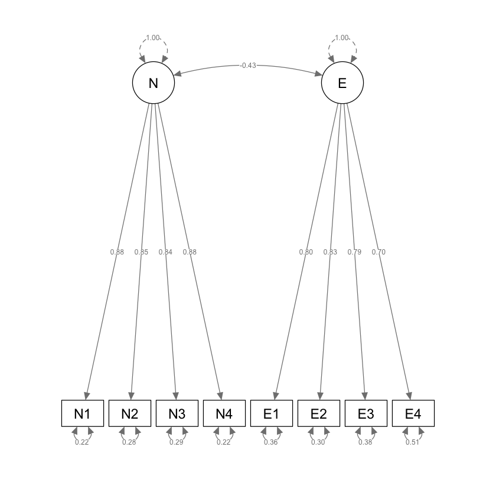

source("../_common.R")
suppressPackageStartupMessages({
library("lavaan")
library("semTools")
})
set.seed(42)38 ✏️ Esercizi
E1. Si ripeta l’esercizio che abbiamo svolto in precedenza usando l’analisi fattoriale esplorativa, questa volta usando la CFA in lavaan. I dati sono forniti da {cite:t}brown2015confirmatory e riguardano a otto misure di personalità raccolte su un campione di 250 pazienti che hanno concluso un programma di psicoterapia:
- anxiety (N1),
- hostility (N2),
- depression (N3),
- self-consciousness (N4),
- warmth (E1),
- gregariousness (E2),
- assertiveness (E3),
- positive emotions (E4).
varnames <- c("N1", "N2", "N3", "N4", "E1", "E2", "E3", "E4")
sds <- "5.7 5.6 6.4 5.7 6.0 6.2 5.7 5.6"
cors <- "
1.000
0.767 1.000
0.731 0.709 1.000
0.778 0.738 0.762 1.000
-0.351 -0.302 -0.356 -0.318 1.000
-0.316 -0.280 -0.300 -0.267 0.675 1.000
-0.296 -0.289 -0.297 -0.296 0.634 0.651 1.000
-0.282 -0.254 -0.292 -0.245 0.534 0.593 0.566 1.000"
psychot_cor_mat <- getCov(cors, names = varnames)
n <- 250Il modello con due fattori ortogonali può essere adattato ai dati nel modo seguente.
cfa_mod <- "
N =~ N1 + N2 + N3 + N4
E =~ E1 + E2 + E3 + E4
"fit_cfa <- lavaan::cfa(
cfa_mod,
sample.cov = psychot_cor_mat,
sample.nobs = n,
orthogonal = TRUE,
std.lv = TRUE
)semPlot::semPaths(fit_cfa,
what = "col", whatLabels = "par", style = "mx",
layout = "tree2", nCharNodes = 7,
shapeMan = "rectangle", sizeMan = 8, sizeMan2 = 5
)Esaminiamo le saturazioni fattoriali:
parameterEstimates(fit_cfa, standardized = TRUE) %>%
dplyr::filter(op == "=~") %>%
dplyr::select(
"Latent Factor" = lhs,
Indicator = rhs,
B = est,
SE = se,
Z = z,
"p-value" = pvalue,
Beta = std.all
) %>%
knitr::kable(
digits = 3, booktabs = TRUE, format = "markdown",
caption = "Factor Loadings"
)
Table: Factor Loadings
|Latent Factor |Indicator | B| SE| Z| p-value| Beta|
|:-------------|:---------|-----:|-----:|------:|-------:|-----:|
|N |N1 | 0.882| 0.051| 17.422| 0| 0.884|
|N |N2 | 0.847| 0.052| 16.340| 0| 0.849|
|N |N3 | 0.840| 0.052| 16.134| 0| 0.842|
|N |N4 | 0.882| 0.051| 17.432| 0| 0.884|
|E |E1 | 0.795| 0.056| 14.276| 0| 0.796|
|E |E2 | 0.838| 0.054| 15.369| 0| 0.839|
|E |E3 | 0.788| 0.056| 14.097| 0| 0.789|
|E |E4 | 0.697| 0.058| 11.942| 0| 0.699|Il risultato sembra sensato: le saturazioni su ciascun fattore sono molto alte. Tuttavia, la matrice delle correlazioni residue
cor_table <- residuals(fit_cfa, type = "cor")$cov
knitr::kable(
cor_table,
digits = 3,
format = "markdown",
booktabs = TRUE
)
| | N1| N2| N3| N4| E1| E2| E3| E4|
|:--|------:|------:|------:|------:|------:|------:|------:|------:|
|N1 | 0.000| 0.017| -0.013| -0.003| -0.351| -0.316| -0.296| -0.282|
|N2 | 0.017| 0.000| -0.006| -0.012| -0.302| -0.280| -0.289| -0.254|
|N3 | -0.013| -0.006| 0.000| 0.018| -0.356| -0.300| -0.297| -0.292|
|N4 | -0.003| -0.012| 0.018| 0.000| -0.318| -0.267| -0.296| -0.245|
|E1 | -0.351| -0.302| -0.356| -0.318| 0.000| 0.007| 0.006| -0.022|
|E2 | -0.316| -0.280| -0.300| -0.267| 0.007| 0.000| -0.011| 0.007|
|E3 | -0.296| -0.289| -0.297| -0.296| 0.006| -0.011| 0.000| 0.015|
|E4 | -0.282| -0.254| -0.292| -0.245| -0.022| 0.007| 0.015| 0.000|rivela che il modello ipotizzato dall’analisi fattoriale confermativa non è adeguato.
fit2_cfa <- lavaan::cfa(
cfa_mod,
sample.cov = psychot_cor_mat,
sample.nobs = n,
orthogonal = FALSE,
std.lv = TRUE
)semPlot::semPaths(fit2_cfa,
what = "col", whatLabels = "par", style = "mx",
layout = "tree2", nCharNodes = 7,
shapeMan = "rectangle", sizeMan = 8, sizeMan2 = 5
)
Esaminiamo le saturazioni fattoriali.
parameterEstimates(fit2_cfa, standardized = TRUE) %>%
dplyr::filter(op == "=~") %>%
dplyr::select(
"Latent Factor" = lhs,
Indicator = rhs,
B = est,
SE = se,
Z = z,
"p-value" = pvalue,
Beta = std.all
) %>%
knitr::kable(
digits = 3, booktabs = TRUE, format = "markdown",
caption = "Factor Loadings"
)
Table: Factor Loadings
|Latent Factor |Indicator | B| SE| Z| p-value| Beta|
|:-------------|:---------|-----:|-----:|------:|-------:|-----:|
|N |N1 | 0.883| 0.051| 17.472| 0| 0.885|
|N |N2 | 0.847| 0.052| 16.337| 0| 0.849|
|N |N3 | 0.842| 0.052| 16.190| 0| 0.844|
|N |N4 | 0.880| 0.051| 17.381| 0| 0.882|
|E |E1 | 0.800| 0.055| 14.465| 0| 0.802|
|E |E2 | 0.832| 0.054| 15.294| 0| 0.834|
|E |E3 | 0.788| 0.056| 14.150| 0| 0.789|
|E |E4 | 0.698| 0.058| 11.974| 0| 0.699|Esaminiamo i residui.
cor_table <- residuals(fit2_cfa, type = "cor")$cov
knitr::kable(
cor_table,
digits = 3,
format = "markdown",
booktabs = TRUE
)
| | N1| N2| N3| N4| E1| E2| E3| E4|
|:--|------:|------:|------:|------:|------:|------:|------:|------:|
|N1 | 0.000| 0.016| -0.015| -0.002| -0.042| 0.005| 0.008| -0.013|
|N2 | 0.016| 0.000| -0.007| -0.010| -0.006| 0.028| 0.002| 0.004|
|N3 | -0.015| -0.007| 0.000| 0.018| -0.062| 0.006| -0.007| -0.035|
|N4 | -0.002| -0.010| 0.018| 0.000| -0.010| 0.053| 0.007| 0.023|
|E1 | -0.042| -0.006| -0.062| -0.010| 0.000| 0.006| 0.001| -0.027|
|E2 | 0.005| 0.028| 0.006| 0.053| 0.006| 0.000| -0.007| 0.010|
|E3 | 0.008| 0.002| -0.007| 0.007| 0.001| -0.007| 0.000| 0.014|
|E4 | -0.013| 0.004| -0.035| 0.023| -0.027| 0.010| 0.014| 0.000|Sistemiamo le saturazioni fattoriali in una matrice 8 \(\times\) 2:
lambda <- inspect(fit2_cfa, what = "std")$lambda
lambda| N | E | |
|---|---|---|
| N1 | 0.8848214 | 0.0000000 |
| N2 | 0.8485128 | 0.0000000 |
| N3 | 0.8436432 | 0.0000000 |
| N4 | 0.8819736 | 0.0000000 |
| E1 | 0.0000000 | 0.8018485 |
| E2 | 0.0000000 | 0.8337599 |
| E3 | 0.0000000 | 0.7894530 |
| E4 | 0.0000000 | 0.6990366 |
Otteniamo la matrice di intercorrelazoni fattoriali.
Phi <- inspect(fit2_cfa, what = "std")$psi
Phi| N | E | |
|---|---|---|
| N | 1.000000 | -0.434962 |
| E | -0.434962 | 1.000000 |
Otteniamo la matrice di varianze residue.
Psi <- inspect(fit2_cfa, what = "std")$theta
Psi| N1 | N2 | N3 | N4 | E1 | E2 | E3 | E4 | |
|---|---|---|---|---|---|---|---|---|
| N1 | 0.217091 | 0.0000000 | 0.0000000 | 0.0000000 | 0.000000 | 0.0000000 | 0.000000 | 0.0000000 |
| N2 | 0.000000 | 0.2800261 | 0.0000000 | 0.0000000 | 0.000000 | 0.0000000 | 0.000000 | 0.0000000 |
| N3 | 0.000000 | 0.0000000 | 0.2882661 | 0.0000000 | 0.000000 | 0.0000000 | 0.000000 | 0.0000000 |
| N4 | 0.000000 | 0.0000000 | 0.0000000 | 0.2221225 | 0.000000 | 0.0000000 | 0.000000 | 0.0000000 |
| E1 | 0.000000 | 0.0000000 | 0.0000000 | 0.0000000 | 0.357039 | 0.0000000 | 0.000000 | 0.0000000 |
| E2 | 0.000000 | 0.0000000 | 0.0000000 | 0.0000000 | 0.000000 | 0.3048445 | 0.000000 | 0.0000000 |
| E3 | 0.000000 | 0.0000000 | 0.0000000 | 0.0000000 | 0.000000 | 0.0000000 | 0.376764 | 0.0000000 |
| E4 | 0.000000 | 0.0000000 | 0.0000000 | 0.0000000 | 0.000000 | 0.0000000 | 0.000000 | 0.5113478 |
Mediante i parametri del modello la matrice di correlazione si riproduce nel modo seguente:
\[ \boldsymbol{\Sigma} =\boldsymbol{\Lambda} \boldsymbol{\Phi} \boldsymbol{\Lambda}^{\mathsf{T}} + \boldsymbol{\Psi}. \]
In \(\textsf{R}\) scriviamo:
R_hat <- lambda %*% Phi %*% t(lambda) + Psi
R_hat %>%
round(3)| N1 | N2 | N3 | N4 | E1 | E2 | E3 | E4 | |
|---|---|---|---|---|---|---|---|---|
| N1 | 1.000 | 0.751 | 0.746 | 0.780 | -0.309 | -0.321 | -0.304 | -0.269 |
| N2 | 0.751 | 1.000 | 0.716 | 0.748 | -0.296 | -0.308 | -0.291 | -0.258 |
| N3 | 0.746 | 0.716 | 1.000 | 0.744 | -0.294 | -0.306 | -0.290 | -0.257 |
| N4 | 0.780 | 0.748 | 0.744 | 1.000 | -0.308 | -0.320 | -0.303 | -0.268 |
| E1 | -0.309 | -0.296 | -0.294 | -0.308 | 1.000 | 0.669 | 0.633 | 0.561 |
| E2 | -0.321 | -0.308 | -0.306 | -0.320 | 0.669 | 1.000 | 0.658 | 0.583 |
| E3 | -0.304 | -0.291 | -0.290 | -0.303 | 0.633 | 0.658 | 1.000 | 0.552 |
| E4 | -0.269 | -0.258 | -0.257 | -0.268 | 0.561 | 0.583 | 0.552 | 1.000 |
Le correlazioni residue sono:
(psychot_cor_mat - R_hat) %>%
round(3)| N1 | N2 | N3 | N4 | E1 | E2 | E3 | E4 | |
|---|---|---|---|---|---|---|---|---|
| N1 | 0.000 | 0.016 | -0.015 | -0.002 | -0.042 | 0.005 | 0.008 | -0.013 |
| N2 | 0.016 | 0.000 | -0.007 | -0.010 | -0.006 | 0.028 | 0.002 | 0.004 |
| N3 | -0.015 | -0.007 | 0.000 | 0.018 | -0.062 | 0.006 | -0.007 | -0.035 |
| N4 | -0.002 | -0.010 | 0.018 | 0.000 | -0.010 | 0.053 | 0.007 | 0.023 |
| E1 | -0.042 | -0.006 | -0.062 | -0.010 | 0.000 | 0.006 | 0.001 | -0.027 |
| E2 | 0.005 | 0.028 | 0.006 | 0.053 | 0.006 | 0.000 | -0.007 | 0.010 |
| E3 | 0.008 | 0.002 | -0.007 | 0.007 | 0.001 | -0.007 | 0.000 | 0.014 |
| E4 | -0.013 | 0.004 | -0.035 | 0.023 | -0.027 | 0.010 | 0.014 | 0.000 |
Calcoliamo la correlazione predetta dal modello tra le variabili \(Y_1\) e \(Y_2\):
lambda[1, 1] * lambda[2, 1] + lambda[1, 2] * lambda[2, 2] +
lambda[1, 1] * lambda[2, 2] * Phi[1, 2] +
lambda[1, 2] * lambda[2, 1] * Phi[1, 2]
0.750782309575684
Questo risultato è molto simile al valore contenuto dell’elemento (1, 2) della matrice di correlazioni osservate:
psychot_cor_mat[1, 2]
0.767
Usando le funzonalità di lavaan la matrice di correlazione predetta si ottiene con:
fitted(fit2_cfa)$cov |>
print() N1 N2 N3 N4 E1 E2 E3 E4
N1 0.996
N2 0.748 0.996
N3 0.743 0.713 0.996
N4 0.777 0.745 0.741 0.996
E1 -0.307 -0.295 -0.293 -0.306 0.996
E2 -0.320 -0.306 -0.305 -0.319 0.666 0.996
E3 -0.303 -0.290 -0.289 -0.302 0.630 0.656 0.996
E4 -0.268 -0.257 -0.255 -0.267 0.558 0.580 0.550 0.996La matrice dei residui è
resid(fit2_cfa)$cov |>
print() N1 N2 N3 N4 E1 E2 E3 E4
N1 0.000
N2 0.016 0.000
N3 -0.015 -0.007 0.000
N4 -0.002 -0.010 0.018 0.000
E1 -0.042 -0.006 -0.062 -0.010 0.000
E2 0.005 0.028 0.006 0.053 0.006 0.000
E3 0.008 0.002 -0.007 0.007 0.001 -0.007 0.000
E4 -0.013 0.004 -0.035 0.023 -0.026 0.010 0.014 0.000La matrice dei residui standardizzati è
resid(fit2_cfa, type = "standardized")$cov |>
print() N1 N2 N3 N4 E1 E2 E3 E4
N1 0.000
N2 1.674 0.000
N3 -1.769 -0.569 0.000
N4 -0.350 -1.152 1.746 0.000
E1 -1.214 -0.161 -1.646 -0.294 0.000
E2 0.154 0.794 0.168 1.626 0.637 0.000
E3 0.219 0.062 -0.191 0.193 0.075 -0.693 0.000
E4 -0.314 0.092 -0.824 0.552 -1.481 0.624 0.690 0.000I valori precedenti possono essere considerati come punti z, dove i valori con un valore assoluto maggiore di 2 possono essere ritenuti problematici. Tuttavia, è importante considerare che in questo modo si stanno eseguendo molteplici confronti, pertanto, si dovrebbe considerare l’opportunità di applicare una qualche forma di correzione per i confronti multipli.
E2. Si utilizzino i dati dass21.txt che corrispondono alla somministrazione del test DASS-21 a 334 partecipanti. Lo schema di codifica si può trovare seguendo questo link. Si adatti ai dati un modello a tre fattori usando l’analisi fattoriale esplorativa con la funzione lavaan::efa(). Usando le saturazioni fattoriali e la matrice di inter-correlazioni fattoriali, si trovi la matrice di correlazioni riprodotta dal modello. Senza usare l’albebra matriciale, si trovi la correlazione predetta tra gli indicatori DASS-1 e DASS-2.